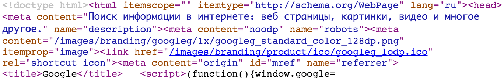

Markovtsev Vadim
Web Programming @ MIPT, 2015-2016
<section class="slide"><div>
<h2>What is HTML?</h2>
<ul>
<li><a href="https://en.wikipedia.org/wiki/HTML"> HyperText Markup
Language</a> is a notation of tags to create web pages.</li>
<li>"Hyper" means that one page can reference other pages.</li>
</ul>
</div></section>Press Ctrl + Shift + C
<html><head><link rel="stylesheet" href="page.css"><style>...</style></head><body><!-- ... --><script src="page.min.js"></script></body></html>
turns into
You should make the resulting production HTML code as small as possible
Google PageSpeed Insights is a complete optimization solution
You should validate your markup against the standard